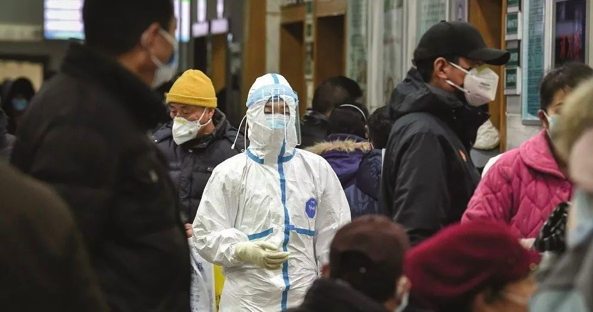

这些抗体检测“单阳”的医护人员，算不算工伤？
原文链接 备份链接 根据抗体“单阳”报告，一些医护人员虽能确定自己经感染新冠病毒，却有可能因不符合确诊标准，而被工伤保险认定、诸多补偿资助拒之门外 文 |《财经》实习记者 朱贺 编辑 | 王小 2020年3月7日，王玮帆的血清抗体检测报告 …

根据抗体“单阳”报告，一些医护人员虽能确定自己经感染新冠病毒，却有可能因不符合确诊标准，而被工伤保险认定、诸多补偿资助拒之门外
本文 3522字，阅读全文约5分钟

文 | 《财经》实习记者 朱贺 编辑 | 王小
2020年3月7日，王玮帆的血清抗体检测报告出来了，报告单显示新冠病毒IgM抗体为阴性，IgG为阳性。他是武汉一家新冠肺炎定点医院的医生。
“单阳”的结果意味着王玮帆已算是痊愈。湖北省一家三甲医院的呼吸科主任向《财经》记者解释，IgM阳性，意味着近期的感染；IgG阳性，说明感染病毒一段时间以后，身体出现的免疫反应，意味着免疫系统对这个病毒有了抵抗力，产生了能杀死病毒的免疫反应。
《财经》记者了解到，武汉至少三家定点医院的部分医生均遇到了相似的难题。由于试剂盒数量有限，一些在1月底2月初错过核酸检测的医护人员，根据血清抗体检测结果，得到了一份迟到的抗体“单阳”检测报告。
产生抗体，本应该是一件值得高兴的事情，然而王玮帆和家人对此颇感无奈。根据这个报告，他们只能确定自己曾经感染过新冠病毒，却有可能因不符合确诊标准而被工伤保险认定、诸多补偿资助拒之门外，甚至还不能确定是否需要自己承担医疗费用。
迟到的“单阳”检测报告
1月初，王玮帆所在的科室开始出现医护人员感染。“毕竟是非感染科室，不如传染病科室重视程度高，”他回忆，1月上旬，科室接待了有发热症状的患者，该患者病情持续恶化，后送到金银潭医院，不久确诊为新冠肺炎。
没过一两天，这位病人的主管医生开始出现症状，不久之后就暂停了工作，这位主管医生在工作期间也和许多医护人员有接触。王玮帆猜测，自己可能就是这样陆续被感染了。
随后该院就出现了医护人员减员的情况。医院安排感染的医护人员，症状较重的住院治疗，症状较轻的回家自行隔离。彼时，王玮帆尚未发现身体有恙，一直在工作岗位上。
看到同事陆续“中招”，为了保险起见，在1月20日左右王玮帆去做了第一次肺部CT检查，当时未发现异常。1月23日是武汉封城的第一天，王玮帆照常上班，晚上回家后就觉得有些不舒服，王玮帆的爱人记得，“有点发烧，量了一下38度左右，身上还发冷，并且开始干咳”。
新冠病毒侵袭的速度超乎王玮帆和家人的想象。1月底，王玮帆又在医院做了一次CT，结果显示双肺感染。《财经》记者在CT检查报告单看到，诊断意见为“双肺多发斑片状感染病灶”。
彼时，武汉市医院的床位已经十分紧张。王玮帆的爱人透露，“说实话，不只我爱人所在科室有医护人员感染的情况，实际上医院的很多科室都有”，感染后病情较重的医护人员都住进了医院。
比起紧张的床位，摆在王玮帆面前的还有最关键的一道关卡——核酸检测。核酸检测结果为阳性，是当时无数亟待确诊的疑似患者通往病房的门票。
当时确诊依据的是，国家卫健委1月28日发布的《新冠病毒感染的肺炎病例监测方案（第三版）》，除流行病学史和临床表现外，核酸检测阳性或病毒基因测序与新冠病毒高度同源，是新冠肺炎患者的确诊标准。
“那会儿整个武汉市的核酸试剂盒数量每天都有限，我爱人也做不了，”王玮帆的爱人告诉《财经》记者，当时该院前后感染的医护人员累计逾百人，“住进医院的重症医护人员都接受了核酸检测；而像我爱人这样的轻症无法安排核酸检测。”
武汉另一定点医院医生张君可也遇到相同难题。“申请核酸检测至少得等3～4天，他说，“而且不管是医院职工还是患者，只有重症才能检测”。
2月中旬，居家隔离已半个多月的王玮帆，等来了核酸检测。其所在医院开始分批次对居家隔离的医护人员进行两次检测。
“大家的结果基本都是阴性，有极个别是阳性”，王玮帆也在核酸检测阴性之列。对此，王玮帆的爱人认为，“毕竟过了半个多月，差不多都好了”。
在家又休息了半月后，王玮帆申请3月初返回工作岗位。这时，医院对这批居家隔离的医护人员进行了血清抗体的检查，王玮帆的检查结果显示IgG抗体单阳。3月中旬，张君可的血清检测结果也呈IgG抗体阳性。
在3月3日，国家卫健委印发的第七版新型冠状病毒肺炎诊疗方案中，除核酸检测和病毒基因测序外，血清新冠病毒特异性IgM抗体和IgG抗体呈双阳性，或者IgG抗体由阴性转为阳性或恢复期较急性期4倍及以上升高，成为确诊新冠肺炎的标准。
上述呼吸科主任向《财经》记者解释，IgG和IgM两个抗体，是感染了病毒后，身体免疫系统作出反应的标志物，“如果说体内产生了抗体，不管是IgG或者IgM抗体中的哪一种，那么基本可以确认肯定是有病毒感染。”
这位呼吸科主任举例，比如有的患者可能两个月前出现了感冒发烧的症状，胸部CT也提示患有肺炎，两个月后的现在，肺炎已经大部分吸收或基本吸收，这时检测出IgG或IgM抗体阳性，标志着这位患者感染过新冠病毒，“我把这种现象定性为康复期的表现”。
关于抗体在体内维持的时间，上述呼吸科主任解释，由于新冠病毒是一个新病毒，现在还不好说，“但根据经验来看，感染病毒后3—5天就可以产生IgM抗体”。
IgG抗体，也就是王玮帆和张君可经检测后呈阳性的抗体，则大概在感染后2—3周左右产生。
工伤认定标准是什么？
与数版诊疗方案的确诊标准擦肩而过，使得像王玮帆这样曾经感染新冠病毒的医务人员，因为迟到的“单阳”检测结果，不仅有可能无处报销此前的治疗费用，同时也难以申请工伤保险，以及公益基金组织给予确诊医务人员的资助。
工伤认定的标准是什么？这是“王玮帆和张君可们”的共同疑惑。
早在1月23日，人社部、财政部、国家卫健委就联合发文明确，在新型冠状病毒肺炎疫情防控和救治工作中，医护及相关工作人员因履行工作职责感染新型冠状病毒肺炎的，应认定为工伤，依法享受工伤保险待遇。
“由此可见，医护人员因感染新冠病毒而被认定工伤的最核心条件，是‘因履行工作职责而被感染’；此时，何种情形能够被认定为‘履行工作职责’成为工伤认定的核心，”北京市中伦文德律师事务所合伙人、劳动法领域专家胡高崇律师向《财经》记者解释，对照《工伤保险条例》第十四条及第十五条的规定和司法实践，要确定是否构成工伤，或者说能否认定为系履行工作职责，需要结合工作时间、工作地点、伤害原因等三个关键性要素来判断。
针对王玮帆和张君可的情况，胡高崇律师进一步解释道，医护人员曾经感染新冠病毒，但被治愈或者不治而愈的，如果医护人员能够证明其曾经系因履行工作职责而被感染，则可以申请工伤认定；但如果医护人员无法证明具体感染病毒的时间或者原因，而现在又不处于感染病毒状态的，则可能将难以被认定为工伤。在此时，从工伤待遇层面，医护人员可能就无法享受到相关法定待遇或者说工伤保险基金待遇。
胡高崇指出，一旦被认定为工伤，根据《工伤保险条例》的规定，工伤职工通常有权享受的待遇，一般来说包括含医疗费、康复费和住院伙食补助费等在内的工伤医疗待遇、停工留薪期工资、一次性伤残补助金、一次性工伤医疗补助金和一次性伤残就业补助金；具体的类别和标准，视具体情况而定。
“那些住进医院的重症医护人员都确诊了，所有的医疗、住宿费用都是国家兜底，还能获得红会基金和许多爱心单位的捐助，”王玮帆的爱人告诉《财经》记者，无法确诊的医务人员和已经确诊的医务人员享受的待遇存在巨大差别，“像奥司他韦这种进口药价格还是比较高的，我爱人之前做检查、买药花的钱，前后花了3000到4000左右”。
王玮帆的爱人介绍，最近上班忙，现在还没时间弄报销的事情。之前做检查和买药的花费都是自己花的钱，根据现在的政策，他不算确诊，也没在门诊留观，可能相关费用报销不了。
张君可之前听说医院可能后期会凭发票报销，但截至记者发稿，还没有接到医院的正式通知。
这些检测结果为“单阳”的医护人员，只能与这些擦肩而过。王玮帆和同事们也曾与医院沟通过，医院回复称，必须要达到国家规定的诊断标准才能予以确认。
《财经》记者就此事数次致电其所就职的医院，未获得回应。
近期，血清抗体检测结果为“单阳”的医务人员陆续返岗，王玮帆安慰爱人，“我的抗体指数比较高，短时间内应该是不会再感染了”。
上述呼吸科主任指出，有些患者体内的IgM抗体消失的比较快，产生后两周左右就会慢慢的降低。所以有些患者呈IgG抗体单阳，这是比较好的现象，说明体内已经有了保护性抗体。IgG抗体的滴度越高也就意味着抵抗力越强。
北京感恩公益基金会发起人、理事长周健告诉《财经》记者，针对这类无法得到确诊的医护人员，基金会曾计划将其纳入补助范围。但没有检查、没有确诊的医护人员群体庞大，在资金筹集方面确实存在困难。
“有一线医生跟我建议，这些医护人员哪怕每人只拿到少量补助，起码能证明他们没有被遗忘，这个群体值得关注。我们在想办法募集资金。”周健说。
（文中王玮帆、张君可为化名，《财经》记者辛颖、信娜对此文亦有贡献）
（本文由树木计划作者【财经杂志】创作，独家发布在今日头条，未经授权，不得转载）

系列报道
◤活粒为《财经》杂志 科技与健康团队 的新媒体项目，坚持独立、独家、独到，合作／爆料请联系：yingxin@caijing.com.cn◢
《财经》旗下健康领域深度报道专栏
扫一扫：

原文链接 备份链接 根据抗体“单阳”报告，一些医护人员虽能确定自己经感染新冠病毒，却有可能因不符合确诊标准，而被工伤保险认定、诸多补偿资助拒之门外 文 |《财经》实习记者 朱贺 编辑 | 王小 2020年3月7日，王玮帆的血清抗体检测报告 …
原文链接 备份链接 图片来源：视觉中国 记者：陈鑫 “ “如果抗体检测方法验证成功，也可以对轻症患者、隐性感染者、甚至是康复者进行普查，那我们就可以知道有多少人感染过新冠病毒。” ” 两种准确率更高的新冠病毒检测试剂将于本周来到中国。 美 …
原文链接 备份链接 【财新网】（记者 覃建行 包志明 高昱）“左肺下叶感染病变样。”第一次CT报告出来时，武汉市红十字会医院护士李秋月稍稍安心了些。她和同事调侃：“这就是普通肺炎，住院两天就能回来上班。”但病程的发展出乎意料，第二天她开始 …
原文链接 备份链接 澎湃新闻记者 胡甄卿 闫颂阳 新冠肺炎疫情逐渐在多国扩散。由于易感人群密集，韩国、美国等国的护理机构和医院出现了新冠肺炎聚集性感染，美国一家护理中心多名老人因感染新冠肺炎死亡，联邦机构已经介入调查。 在护理机构和医院长 …
原文链接 备份链接 3 月 4 日，武汉市多家方舱医院收到紧急通知，暂停办理病人出院，对于出院的新冠患者施行更加严格的检测标准和审核流程，第二天就要正式开始落实。此前，有的方舱医院每天有 30、40 名患者出院。 据澎湃、界面等多方报 …